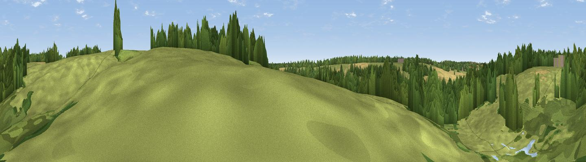

Viewpoint near Stoke by Nayland
#45836 in England · top 83% of its area beats it · near Stoke by NaylandThe view, rendered

A 360° render of this exact spot computed from the terrain model, tree cover and land cover — summer colours, afternoon light, calibrated against photographs of famous viewpoints. Real trees, hedges and buildings will differ in detail.
The panorama
Grey silhouette: terrain skyline in each direction (720 bearings, Earth curvature and refraction included). Dashed green: skyline with trees (+15 m) and buildings (+8 m) as obstacles. Blue strip: how far the ground is visible on each bearing.
Where the view opens
Wedge length = distance to the farthest visible ground on that bearing (vegetation-aware). Rings at 10, 25 and 50 km.
What fills the view
57% grassland · 33% woodland · 10% cropland
Angular shares of the visible panorama (visual magnitude), not map area. Landscape diversity 0.41 (0–1 Shannon).
Key numbers
More beautiful places nearby
The staircase of upgrades: each row has a higher view potential than everything closer. Driving times are estimates from straight-line distance, calibrated against real road routing — check an actual route before setting out.
| Place | Direction | Drive | Score |
|---|---|---|---|
| Viewpoint near Stoke by Nayland | S · 1 km | ~4 min | 30.1 |
| Viewpoint near Little Cornard | WNW · 11 km | ~21 min | 32.5 |
| Viewpoint near Copford | SSW · 15 km | ~27 min | 34.6 |
| Viewpoint near Great Blakenham | NE · 17 km | ~30 min | 39.5 |
| Viewpoint near Trimley St Mary | E · 27 km | ~43 min | 41.0 |
| Criers Wood | SSW · 28 km | ~44 min | 45.7 |
| Viewpoint near Danbury | SW · 39 km | ~58 min | 46.0 |
| Stamfords Hill | SSW · 40 km | ~59 min | 54.1 |
51.99405, 0.91340 · source: osm viewpoint · position refined by local search. Computed location — check access rights before visiting.